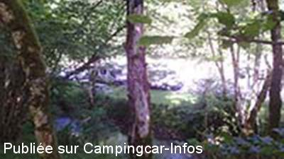
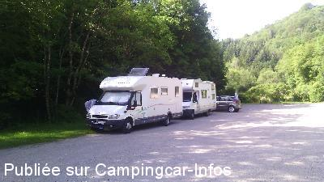
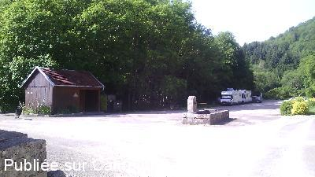
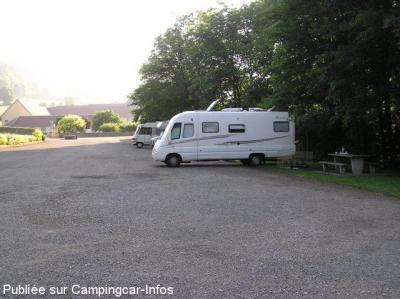

APN = Parking toléré jour/nuit de :
CHAUX LÈS PASSAVANT
(N° 564)
Accès/adresse :
D120
L'abbaye La Grâce Dieu
25530 CHAUX LÈS PASSAVANT
L'abbaye La Grâce Dieu
25530 CHAUX LÈS PASSAVANT
Latitude : (Nord) 47.24874° Décimaux ou 47° 14′ 55′′
Longitude : (Est) 6.34632° Décimaux ou 6° 20′ 46′′
Tarif : Gratuit
Services :

Boutiques de vente produits moniaux
Autres informations :
Abbaye Cistercienne avec grand parking à l'écart
Aviser la sœur hôtelière si on reste la nuit
Accès : prendre la D 492, tourner à la D 120 direction Orsans
Ne pas prendre la D30 et D 50 petite route très étroite

Le 10/06/2014 par doudoume

Le 09/06/2014 par doudoume

Le 09/06/2014 par doudoume

Le 05/07/2006 par Patrick Bignard
de
thierry
le 09/06/2014 :
très bel endroit , très calme , bien ombragé a part le bruit du ruisseau et le chant des oiseaux , un calme , très belle abbaye a proximité , tables (3) , des wc et lavabo a proximité , possibilité de prendre de l'eau , manque que la vidange pour être au paradis , point de départ de nombreuses ballades
très bel endroit , très calme , bien ombragé a part le bruit du ruisseau et le chant des oiseaux , un calme , très belle abbaye a proximité , tables (3) , des wc et lavabo a proximité , possibilité de prendre de l'eau , manque que la vidange pour être au paradis , point de départ de nombreuses ballades
de
Misabeige
le 04/10/2011 :
Pour se rendre à cet endroit, prendre la D 492, tourner à la D 120 direction Orsans ne pas prendre la D30 et D 50 petite route très étroite, croisement pratiquement impossible
Pour se rendre à cet endroit, prendre la D 492, tourner à la D 120 direction Orsans ne pas prendre la D30 et D 50 petite route très étroite, croisement pratiquement impossible
de
Marano78
le 15/08/2010 :
Lieu d'un calme exceptionnel. Il y a effectivement un point d'eau avec des WC mais je ne suis pas sûr que l'on puisse vidanger nos WC chimiques dedans. Pensez à faire un don aux soeurs présentes sur place, même si elles ne réclament rien.
Lieu d'un calme exceptionnel. Il y a effectivement un point d'eau avec des WC mais je ne suis pas sûr que l'on puisse vidanger nos WC chimiques dedans. Pensez à faire un don aux soeurs présentes sur place, même si elles ne réclament rien.
de
Patrick Bignard
le 05/07/2006 :
Lieu calme, les CC peuvent être à l'ombre presque toute la journée. Il y a des tables, 1 robinet d'eau pour faire le plein, 2 wc, 2 lavabos et les serviettes sont changées tous les jours par les soeurs de l'abbaye.
Les cloches sonnent jusqu'à 19h et reprennent à 6h le matin. Nous y avons passé une nuit avant d'aller en Suisse et au retour, nous avons passé la nuit du samedi début juillet 2006 (SEUL) avec les chants d'oiseaux.
Lieu calme, les CC peuvent être à l'ombre presque toute la journée. Il y a des tables, 1 robinet d'eau pour faire le plein, 2 wc, 2 lavabos et les serviettes sont changées tous les jours par les soeurs de l'abbaye.
Les cloches sonnent jusqu'à 19h et reprennent à 6h le matin. Nous y avons passé une nuit avant d'aller en Suisse et au retour, nous avons passé la nuit du samedi début juillet 2006 (SEUL) avec les chants d'oiseaux.
de
Papy.VIEILLARD
le 22/01/2003 :
Si on sait rester discret aucun problème pour un stationnement. Lieu particulièrement calme. Belles balades à pieds, vélo, VTT. A visiter grottes de la Glacière.
Si on sait rester discret aucun problème pour un stationnement. Lieu particulièrement calme. Belles balades à pieds, vélo, VTT. A visiter grottes de la Glacière.